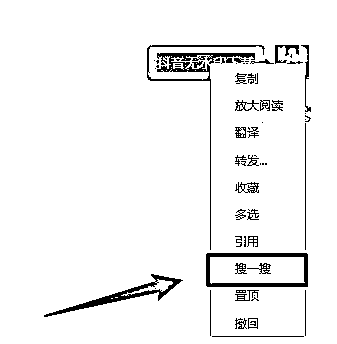
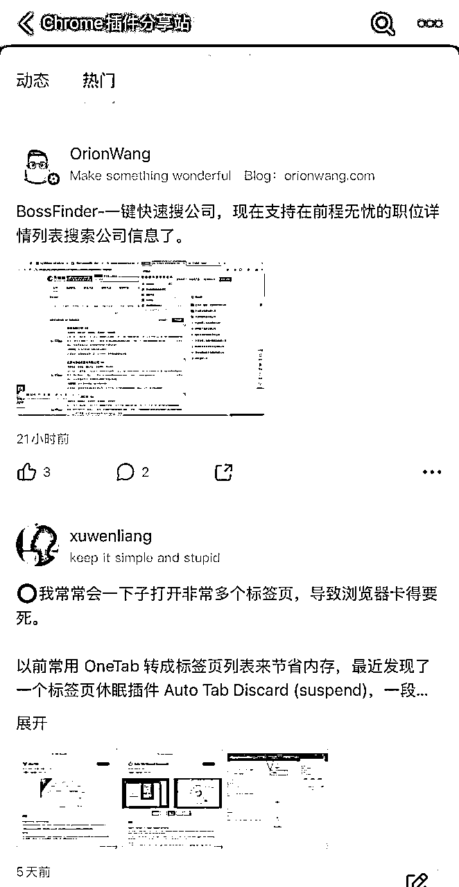

来源：https://kj259khusm.feishu.cn/docx/Zce2dOt0joSZMHxETLkcOlr1nTh
大家好，我是浅笑。
看到亦仁老板发在星球的龙珠悬赏，是关于工具的，我比较喜欢探索各个领域的信息，也喜欢整合，正好趁这个机会去梳理一下工具。
这个工具我整理了以下几个分类，
生财有术航海资料库工具,
数据分析工具，
一些AI工具，
数据整理工具，
自动化工具，
其他有意思的工具，
最后是关于找工具的一些小心得，
授人以鱼不如授人以渔。
希望能对大家有所帮助和启发～
来自生财有术视频号航海实战资料库
来自生财有术抖音航海实战资料库
来自生财有术小红书航海实战资料库
来自生财有术 B 站航海实战资料库
来自生财有术英文工具站航海实战资料库
来自生财有术亚马逊航海实战资料库
来自生财有术快团团实战资料库
来自生财有术公众号航海实战资料库
来自生财有术资料整理航海实战资料库
里面有非常全的工具整理，尝试去点开一下，然后去使用，并不是说公众号的工具就只能用在公众号，甚至在抖音，小红书也能用，慢慢得去迁移使用。
官方网站：https://m.chanmama.com
功能：找达人，找爆品，找直播间，找品牌小店等等
闲鱼日卡九元，性价比很高
官方网站：https://www.douchacha.com
主要功能：直播榜，达人涨粉榜，热销商品，飙升视频等
官方网站：https://m.kaogujia.com
主要功能：找达人，商品，直播，小店，品牌，视频，关键词等，还可以看达人榜，直播榜，商品榜，小店榜
1. 官方网站：https://buyin.jinritemai.com/mpa/account/login?log_out=1&type=24
2. 主要功能：是抖音为达人、商家、机构服务商提供的综合商品分享管理平台。可以在这里管理橱窗商品、管理直播间商品；可以分析自己账号整体的交易数据情况，包括图文、店铺和直播的带货。
3. 价格：免费。但仅支持5类人登录：
- 抖音/头条/抖音火山版的达人（需开通商品分享权限）
- 机构服务商（指管理达人的各个mcn机构）
- 小店联盟商家（指具有小店精选联盟权限的商家
- 合作商家（指没有入驻小店，但被邀请合作的外部商家）
- 电商平台（指与抖音对接的各个电商平台）。
- 官方网站：www.chanxiaohong.com
- 主要功能：博主榜、笔记榜、品牌榜、热搜词等等
- 官方网站：www.qian-gua.com/
- 主要功能：商品、达人挖掘、分析；热门内容查找、商品营销行为分析等
- 网站链接:xs.newrank.cn/home
- 主要功能：找视频号、榜单、直播分析、直播商品分析、流量推广、对接合作等等。
- 网站链接：www.youwant.cn/
- 主要功能：目前主要有视频号榜单、直播带货榜，可以分析视频、达人、直播数据。
- 网站链接：https://sycm.taobao.com/custom/
- 主要功能：观测店铺数据，可以查看在线商品的搜索人气、点击量、支付转化率等等。还有选词助手、商品温度计、销量测等等。
- 网站链接：www.hsydata.com/
- 主要功能：分析大盘流量，查找、分析UP主，带货榜，上单分析等等
- 网站链接：app.chandashi.com/
- 主要功能：查询苹果、安卓所有APP的数据，包括排名、点击量、下载量等等。
- 网站网址：https://www.5118.com
- 功能：行业词库、网站SEO数据分析。可以查各行业的热门词、网站搜索热门词等等。
补充：以上工具都可以在闲鱼买日卡，便宜划算，而且在一天内处理完效率比较高，假如再有需要，再买一个日卡，当然老板们也可以开月卡，年卡，对一个工具使用度比较高的话。
Podcastfy-Demo 是一个开源的 Python 项目，可以将各种文本内容（例如网页、PDF 文档）转化为多语言的音频对话。
与主要专注于笔记或研究整合的工具（如 NotebookLM ）不同，Podcastfy 为用户提供一种简单、高效的方式，将各种来源的文本自动生成类似播客的音频内容，从而实现内容创作的自动化和多语言扩展。
ebook2audiobookXTTS 是一个开源项目，旨在将电子书自动转换为有声书，并支持多种语言、语音克隆和章节信息的生成。该项目结合了 Calibre（电子书转换工具）和 Coqui XTTS（文本转语音引擎），通过简单的命令或Web界面完成转换，方便用户将他们的电子书转换为音频文件，适合日常听书需求或个性化有声书制作。
Voice-Pro 是一个基于Gradio Web-UI的集成解决方案，专注于语音转录、翻译和文本转语音（TTS）的AI工具。
该工具通过一个简单易用的 Web 用户界面（UI）提供强大的多语言支持，能够轻松处理音视频文件，并自动生成字幕、翻译内容，甚至合成多语言语音。
结合了 OpenAI 的 Whisper 模型和多个开源的翻译与 TTS 引擎。它支持多种音频和视频格式，用户可以通过它轻松完成从语音转录、翻译到生成音频字幕的整个流程。
它支持超过 100 种语言，你可以用它把音频或视频中的语音内容转成文字、自动生成字幕，还可以把这些文字翻译成多种语言，再生成不同语言的配音。
PimEyes 是一个人脸识别搜索引擎和反向图像搜索工具，旨在帮助用户找到哪些网站发布了他们的照片。它允许用户上传照片并通过反向图像搜索找到包含该面孔的图像。
你只需要上传一张自己的照片，PimEyes 会搜索互联网，告诉你哪些网站发布了相似的图片。它特别适合想保护自己隐私、追踪照片使用情况的人。
人脸搜索引擎：用户上传一张包含他们面孔的照片，PimEyes 使用人脸识别技术扫描互联网，找到包含相似面孔的照片，并显示这些图片出现的网页。
反向图像搜索：除了查找面部相似的照片，PimEyes 还可以执行标准的反向图像搜索，帮助用户找到与上传图片相似的其他版本、大小或内容相近的图像。
搜索结果链接：用户可以看到包含他们照片的网站的具体链接，直接访问相关页面。
隐私保护：PimEyes 可以帮你发现照片是否被非法使用。如果你不想某些照片被找到，还可以要求从搜索结果中删除这些照片。
订阅功能：付费用户可以获得更多功能，比如查看具体网站的链接、设置监控，当有新照片出现时会收到通知，还可以请求删除非法使用的照片。
StackBlitz 推出了 Bolt․new，这是一款结合了 AI 与 WebContainers 技术的强大开发平台，允许用户快速搭建并开发各种类型的全栈应用。
它的主要特点是无需复杂的开发环境配置，你可以直接通过网页端在线完成从编写代码到部署应用的所有步骤，极大地方便了开发过程。
Bolt․new旨在为开发者提供一个轻量级、基于浏览器的全栈开发环境。你可以通过简单的提示创建、编辑、运行和部署复杂的全栈应用，而且全部在浏览器中完成整个开发流程，不需要安装额外的软件。
这意味着，你只要有一个浏览器，就能创建、编辑、运行、调试并发布完整的应用程序。
Open NotebookLM 是一个将 PDF 文件转化为播客的工具，依靠 Llama 3.1 和 meloTTS 等开源技术构建，可以实现 NotebookLM 的部分体验。用户可以上传文件或通过 URL 提供内容，并能对播客的语气和长度进行定制化。
由于采用了 meloTTS 理论上是支持中文的。
PDF 转播客：可以将任何 PDF 文档或者链接转换为播客形式。通过分析 PDF 内容，生成自然的对话，适合音频播客格式。
对话生成：工具生成的对话设计为既信息丰富又具有娱乐性，使内容易于聆听和理解。
用户友好界面：使用基于 Gradio 的简单交互界面，用户可以轻松上传 PDF 并生成播客内容，无需复杂的设置。
文本转语音：利用开源的 LLM（大语言模型） 和 文本转语音模型，将文本转换为自然的语音对话，支持多种语言，并以 MP3 格式导出。
使用了 Llama 3.1、meloTTS 和 Gradio 等开源 AI 工具构建。
Screenpipe 是一个可以读取你屏幕和麦克风的AI工具，它会持续24小时记录你的屏幕和音频数据，并将这些数据与AI结合，为你提供自动化、智能化的解决方案。
Screenpipe 能够全天候运行，持续捕获屏幕和音频数据，并在后台不间断地处理这些信息。为构建上下文感知的AI应用程序提供完整的数据流。
它是Rewind.ai的开源替代方案，确保用户完全拥有自己的数据。该项目使用Rust构建，提供多种安装方式，包括桌面应用程序和Rust库，功能丰富，支持插件、视频嵌入和语音识别等。
Screenpipe 是一个100%开源的工具，用户可以根据自己的需要定制和使用。所有数据都存储在本地，确保用户对数据的完全控制，提升了安全性和隐私保护。
故事板是一种视觉工具，用于通过一系列框架描绘故事或概念，类似于漫画。它最初用于电影行业，帮助有效规划和传达想法，通过简短描述关键时刻的动作或对话。
StoryTribe 是一个免费的在线故事板制作工具，专为专业人士设计，适用于视频制作人、营销人员、UX设计师等。它帮助用户快速创建高质量的故事板，无需绘画技能。
StoryTribe 通过可自定义的元素和简单的绘图工具，帮助用户更轻松地创作故事板。它消除了复杂的提示编写过程，鼓励用户通过简单的绘画来表达创意。
ComfyUI-AdvancedLivePortrait 可以利用面部跟踪和表情编辑技术制作动画视频。它可以从一张静态照片中提取出人物的面部表情，并对这些表情进行编辑和调整。然后，用户可以将编辑过的面部表情插入到现有的视频中，使视频中的人物表现出新的表情变化。甚至在没有原始视频的情况下，用户也可以通过这些面部表情创建出全新的动画视频。
HivisionIDPhotos 是一个轻量级且高效的AI证件照制作工具，旨在为用户提供便捷的证件照生成方案。该项目通过AI算法实现对多种用户拍照场景的识别、抠图以及证件照生成，能够根据不同尺寸规格生成标准证件照和排版照，未来还计划添加美颜和智能换正装功能。
HivisionIDPhoto 支持：
轻量级抠图：
利用高效的AI算法，HivisionIDPhoto能够精确地从照片中抠取人像，生成干净的透明背景图像，为后续处理提供高质量的素材。
生成标准证件照：
HivisionIDPhoto支持根据不同的规格要求生成标准证件照，适用于各种用途，如护照、签证等。用户可以指定尺寸，并根据需要调整背景颜色和其他参数。
生成六寸排版照：
该工具可以将多张证件照排版成标准的六寸照片，方便用户进行打印和批量制作。
智能换背景：
HivisionIDPhoto支持为证件照增加或更换背景颜色，用户可以轻松选择符合要求的背景色，从而快速完成证件照的制作。
Cursor AI Rules Directory”为Cursor编辑器（一个AI驱动的代码编辑工具）提供最佳的Cursor配置规则，帮助开发者在使用不同编程语言和框架时更高效地编写代码。
Cursor 是一个AI代码编辑器，是一个基于人工智能的代码编辑工具，能够帮助开发者更智能地编写代码。
智能补全：利用AI技术提供代码的智能补全，帮助开发者更快地编写代码。
代码调试：自动检测代码中的错误并提供修复建议。
代码生成：根据简单的指令生成复杂的代码段，减少开发者的工作量。
语言支持：支持多种编程语言，适用于不同的开发需求。
PDF Guru Anki 是一款以PDF为中心的多功能办公学习工具箱，支持 win10/11, macOS, Linux 平台。
包含四大板块功能：
PDF实用工具箱：包括PDF水印去除、批量添加书签、批量OCR、PDF转换等功能。
Anki制卡神器：支持从PDF、Word、Xmind、幕布、Markdown、Excel、微信读书、欧陆词典等材料快速制作Anki卡片，支持挖空题、问答题、选择题等题型。
Anki最强辅助：拓展了Anki的功能，包括自建同步服务器、卡片导出PDF、字段批量修改、批量添加发音、图片批量上传图床等。
视频笔记神器：支持边看视频边记笔记，插入视频时间戳和截图，支持时间戳回链跳转，并与Anki制卡功能结合，打造从记录到复习的学习闭环。
ComfyUI_Bxb 是一个插件，可以将 ComfyUI 的工作流一键转换为微信小程序、抖音小程序、微信内H5、微信外H5，并且支持支付变现功能。用户只需将 ComfyUI_Bxb 插件加入现有工作流中，即可实现上述转换功能。
ComfyUI_Bxb 主要功能包括：
一键转换：将 ComfyUI 工作流一键转换为微信小程序、抖音小程序、微信内H5、微信外H5，方便用户快速将工作流变现。
支付变现支持：转换后的小程序和 H5 页面均支持支付功能，帮助用户实现商业化。
安全性提升：增加了工作流的安全性，工作流 API 数据保存在本地电脑，不再上传到服务器，杜绝了数据泄露的风险。
多平台兼容：支持 Windows、Linux 和 Mac 三大主流操作系统，用户可以在不同平台上进行开发和操作。
多设备并发：支持在多台电脑上同时进行工作流处理，只需确保模型路径一致，并复制工作流 API 数据即可，无需重新转换。
推广与分享功能：支持微信作品推广分成功能和抖音小程序推广计划功能，用户可以通过推广链接或二维码分享作品，并自主设置分成比例。
多图与视频支持：支持一次生成多张图片，以及视频输入输出功能，特别适用于抖音小程序端。
作品管理：用户可以通过插件实现作品的删除和分享功能，方便作品的管理与推广。
Vozo Rewrite & Redub 是一款创新的视频编辑工具，你可以通过简单的提示重写视频脚本、然后这个工具会自动给视频重新配音、翻译语音并口型同步，然后生成新的视频。
无论是将经典视频转变为病毒视频宣传片，还是将普通视频变成喜剧，亦或是将一种语言翻译成多种语言，Vozo 都能在几秒钟内完成。
OmniParse 是一个数据摄取和解析平台，可以将各种非结构化数据（如文档、表格、图像、视频、音频文件和网页内容）转换为结构化、可操作的数据，以便于生成式人工智能（GenAI）应用的兼容和优化。
它可以进行：
数据清理：从原始数据中去除错误、不一致或无用的信息。
数据结构化：将非结构化的数据转换为有组织、标准化的格式，使其易于分析和使用。
沉浸式翻译团队做的新产品bilin.ai bilin.ai 有点意思。
是一个AI搜索，在多语言处理上做得很不错
不管你输入的是什么语言，都会在内部翻译为多种语言去搜索，之后你可以选择以什么语言来显示结果。
举例，你可以选择同时搜索日语、法语、德语的资料，但是你输入的可以是中文，而结果可以展示为英文，让语言不再是信息查询的障碍。（来自哥飞）
又一个AI搜索引擎诞生：Exa AI。该公司最近宣布获得了1700万美元的A轮融资，由Lightspeed领投，Nvidia的NVentures和Y Combinator参投。
与其他旨在取代谷歌的AI驱动搜索引擎不同，Exa的目标是创建一个专门为AI设计的搜索工具。
Exa的使命:
互联网包含人类的集体知识，但目前的搜索体验更像在垃圾场中导航，而非在知识图书馆中漫游。核心问题是互联网知识被大量信息掩埋。
Exa的使命是组织世界的知识，通过更好的搜索算法，过滤信息，提取真正的知识。
与传统搜索引擎不同的是，Exa 的搜索引擎专为AI模型设计，用来帮助AI模型在互联网上搜索信息并返回准确答案，而不是依赖于人类用户的键盘输入。
Exa 的搜索引擎使用向量数据库和嵌入模型（embedding models）技术，训练模型来预测下一个相关链接，而不是下一个词。这个方法使Exa能够处理链接数据集，从而提供与众不同的搜索结果。
Exa能理解复杂查询，精确过滤互联网信息，通过使用嵌入模型（embedding models）将网页内容转换为数值列表，这种方法可以更好地理解和匹配查询内容，返回更符合实际需求的结果。
MistoLine是一个基于SDXL-ControlNet的模型，专注于实现对不同类型线稿的灵活适应和高精度图像生成。它能够利用用户提供的各种线稿作为输入，包括手绘草图、不同预处理器生成的线稿以及模型自动生成的轮廓线。
以上AI工具内容来自@小互，付费内容摘录
多说一句。
实话说，我买下也没咋看，不过也是因为写这个工具整理，才开始去检索自己的信息源，然后去上手一些工具，最高效的方式就是做一个践写者。
在写作中去践行，在践行中去写作，两者相辅相成。
在践行中你就会知道自己该写什么，有什么方向。
同样在写作中你也会知道自己该做什么。
写给行带来启发，同时行又会给写带来启发。
1. 大数据导航 (https://hao.199it.com/)
介绍:这是一个综合性的大数据资源导航网站,汇集了众多数据分析、可视化工具和行业数据源。
适用范围:适合数据分析师、市场研究人员和对大数据感兴趣的人士,可以快速找到各类数据资源和工具。
2. 国家统计局 (https://www.stats.gov.cn/)
介绍:中华人民共和国国家统计局的官方网站,提供全面的国家统计数据和分析报告。
适用范围:适合研究中国经济、人口、社会发展等领域的学者、政策制定者和企业决策者,可获取权威的统计数据和研究报告。
3. 阿里研究院 (http://www.aliresearch.com/cn/index)
介绍:阿里巴巴集团旗下的研究机构,致力于互联网经济、数字经济等领域的研究。
适用范围:适合关注电子商务、数字经济、科技创新等领域的研究人员、创业者和投资者,可获取行业趋势分析和前沿研究成果。
4. 中国统计信息网 (http://www.tjcn.org/)
介绍:提供全面的中国统计数据和分析服务的专业网站。
适用范围:适合需要详细统计数据的研究人员、企业管理者和政府工作人员,可查询各地区、各行业的统计信息。
5. 统计年鉴 (https://www.zgtjnj.org/index.aspx)
介绍:提供中国统计年鉴在线查询服务的专业网站。
适用范围:适合需要系统性、历史性统计数据的研究者、学生和政策分析师,可查阅历年统计年鉴数据。
6. 中华人民共和国商务部 (https://www.mofcom.gov.cn/)
介绍:中国商务部的官方网站,提供商务政策、国际贸易、投资等信息。
适用范围:适合从事国际贸易、投资的企业、外交人员和经济研究者,可了解最新的商务政策和经贸信息。
7. 中国政府网 (https://www.gov.cn/)
介绍:中华人民共和国中央人民政府的官方门户网站。
适用范围:适合普通公众、记者、研究人员和政府工作人员,可获取最新的政府政策、公告和各类政务信息。
8. 政府信息公开 (https://zwgk.mct.gov.cn/zfxxgkml/447/465/index_3081.html)
介绍:中华人民共和国文化和旅游部政府信息公开专栏。
适用范围:适合关注文化和旅游领域政策的研究者、从业者和普通公众,可查阅相关法规、政策和行业信息。
这些网站涵盖了从宏观经济数据到具体行业信息的广泛范围,可以满足不同用户在研究、决策和信息获取方面的多样化需求。
1. 世界贸易组织 (https://www.wto.org/)
介绍:世界贸易组织(WTO)的官方网站,提供全球贸易规则、贸易谈判、争端解决等相关信息。
适用范围:适合国际贸易从业者、政策制定者、经济学者和跨国企业管理者。用户可以在这里:
- 了解最新的全球贸易政策和规则
- 查询各国贸易统计数据
- 获取贸易争端解决案例
- 跟踪全球贸易谈判进展
2. 世界银行 (https://data.worldbank.org.cn/)
介绍:世界银行数据库的中文版网站,提供全球发展数据和各种统计指标。
适用范围:适合经济学家、发展研究人员、政策分析师和国际组织工作人员。用户可以:
- 获取各国经济、社会、环境等方面的详细数据
- 使用交互式工具进行数据可视化
- 下载长期的历史数据系列
- 比较不同国家和地区的发展指标
3. 美国经济分析局 (https://www.bea.gov/)
介绍:美国商务部下属的经济分析局(BEA)官方网站,提供美国经济数据和分析。
适用范围:适合经济学家、金融分析师、政策研究人员和对美国经济感兴趣的各界人士。用户可以:
- 查询美国GDP、个人收入、国际贸易等核心经济指标
- 获取行业经济数据和区域经济分析
- 下载详细的经济统计报告
- 使用交互式工具探索经济数据
1. 移动观象台 (https://mi.talkingdata.com/index.html)
介绍: TalkingData旗下的移动互联网数据分析平台,提供app应用分析和移动广告监测服务。
适用范围: 适合移动应用开发者、市场营销人员和数字广告从业者。用户可以:
- 获取app市场数据和用户行为分析
- 进行移动广告效果追踪和优化
- 了解移动互联网行业趋势
2. 极光大数据 (https://www.moonfox.cn/insight/report)
介绍: 提供移动互联网行业数据分析和研究报告的平台。
适用范围: 适合移动互联网从业者、投资分析师和市场研究人员。用户可以:
- 查阅各类app和行业分析报告
- 获取用户画像和行为洞察
- 了解移动互联网最新发展趋势
3. 前瞻经济学人 (https://www.qianzhan.com/analyst/)
介绍: 提供行业研究报告和经济数据分析的专业平台。
适用范围: 适合企业决策者、投资分析师和战略研究人员。用户可以:
- 获取各行业深度研究报告
- 查阅宏观经济和产业经济数据
- 了解行业发展趋势和政策动向
4. 七麦数据 (https://www.qimai.cn/)
介绍: 专注于移动应用数据分析的平台,提供app排行榜和ASO优化服务。
适用范围: 适合移动应用开发者、产品经理和ASO从业者。用户可以:
- 查看应用商店排行榜和下载量数据
- 进行竞品分析和关键词研究
- 获取ASO优化建议
5. IT桔子 (https://www.itjuzi.com/)
介绍: 专注于创业公司和投资机构信息的数据服务平台。
适用范围: 适合创业者、投资人和产业研究者。用户可以:
- 查询创业公司和投资机构信息
- 了解投融资事件和行业动态
- 获取创业生态系统的分析报告
6. 镝数聚 (https://www.dydata.io/)
介绍: 提供数据可视化和图表制作工具的在线平台。
适用范围: 适合数据分析师、设计师和需要制作数据图表的各行业人士。用户可以:
- 使用在线工具创建各类数据图表
- 获取数据可视化模板和素材
- 学习数据可视化技巧和最佳实践
7. 易观智库 (https://www.analysys.cn/article/analysis/)
介绍: 提供互联网行业分析报告和数据洞察的研究平台。
适用范围: 适合互联网从业者、市场分析师和企业决策者。用户可以:
- 阅读行业分析报告和专家观点
- 获取用户行为数据和市场趋势洞察
- 了解新兴技术和商业模式发展
8. 企鹅智库 (https://news.qq.com/ch/tech)
介绍: 腾讯新闻旗下的科技频道,提供科技行业新闻和分析。
适用范围: 适合科技爱好者、IT从业者和普通读者。用户可以:
- 阅读最新科技新闻和产品评测
- 了解科技行业动态和趋势分析
- 获取科技企业和创新创业信息
9. 数位观察 (https://www.swguancha.com/)
介绍: 专注于数字经济和科技创新的分析平台。
适用范围: 适合数字经济从业者、创新研究人员和政策制定者。用户可以:
- 阅读数字经济和科技创新趋势分析
- 了解新兴技术应用和商业模式创新
- 获取数字化转型和创新政策洞察
这些网站涵盖了从移动互联网、创业投资到数据可视化、科技创新等多个领域,为不同背景的用户提供了丰富的数据分析和行业洞察资源。它们可以帮助用户更好地理解数字经济发展趋势,支持商业决策和创新研究。
本文一部分自己整理，一部分AI编写，欢迎补充
分析一段话，『什么话让你起鸡皮疙瘩?
这是我的答案:“你浪费了数年，因为你无法浪费几小时。”
1.在学校里受奖励但后来生活中惩罚你的行为:在不问原因的情况下完成工作。
2.在学校里受惩罚但后来生活中奖励你的行为:问“我为什么要做这件事?”
3.忙碌陷阱:今天的忙碌会导致明天更加忙碌。你永远没有时间去质疑、委派或优先安排你的日程。
4.忙碌的标志:你不知道最重要的问题是什么。
提示:
如果你不知道最重要的问题是什么……好消息是:你刚刚找到了这个问题。“现在最重要的问题是什么?”
5.清理收件箱和信息可能是忙碌的陷阱。你所做的只是增加了未来你将收到的回复数量。
6.你的时间比你想象的要少。你并没有一天24小时。这就像把收入和利润混淆。考虑到睡眠的时间税，你每天只有16小时。
7.自我提醒:如果我太忙以至于没有20分钟的时间去思考当天最重要的事情是什么:我可能应该花一个小时。
8.令人清醒的数据:调出去年这个时候的日历，看看从现在的角度来看你浪费了多少时间。
9.能量剃刀:如果你不安排能产生能量的行动，就假设它们永远不会发生。如果你不监控消耗能量的行动，就假设它们会不断扩展。
所有低控制感的道路都通向熵。
10.把维多利亚时期工厂工人的思维方式带到无限杠杆的时代，就像带着拳击手套去参加无人机战争。
11.“平均技术工作者不能平均超过6分钟不检查通讯工具。"--Sam Corocos
12.“有这么多人工作如此努力，却收效甚微。”--Andy Grove
13.清晰思考的产出在人类历史上从未如此之高。忙碌的产出在人类历史上从未如此之低。」
而自动化工具就是帮助我们通过浪费几小时，而节省很多时间的方式。⬇️
如果把ChatGPT的出现算作AI 1.0的话，那么现在的coze，AI智能体，无疑已经把AI带入了2.0时代。
GPT没法直接生成PPT，而AI智能体就可以；GPT没法把抖音里的视频，转化为小红书笔记，而AI智能体就可以；GPT没法操作换脸证件照，而AI智能体就可以……
之前重复性的copy文案，重复性的SOP执行工作，利用AI智能体一键就能解决。
https://scys.com/view/docx/FfxLddw8DoDHnLx51EbcnAHDn3g
在生财有术索引站打开
解放双手：RPA（机器人流程自动化）能帮你搞定重复的、有规则的操作，让你把时间用在更有价值、更有创造性的工作上，为项目、业务提效。
普适选择：RPA 是非编程人员尝试自动化工具的最普适选择，让更多人无需编程基础即可组装出自己的 7*24 小时机器人助手。
从入门到精通，行动起来，从 RPA 中受益！
https://scys.com/view/docx/Onl7dyK2vosOPuxVq3mcCXqtnbc
在生财有术索引站打开
很多人担心，学习编程需要懂python、懂C++、懂ava……门槛太高了，不是科班出身根本行不通。
确实，在AI出现之前，编程是专业程序员才能做好的事。但是随着ChatGPT 4o、Claude 3.5等大模型出现，编程就变的简单了。这些大模型智能水平非常高，不仅能帮你写代码，还能帮你查Bug，你只需要提供想法，就能完成工具的开发。
https://scys.com/mobile/activity/landing?id=4246
在生财有术索引站打开
🆔 软件名称：好用便签
⭐️ 软件功能：便签软件
➡️ 支持平台： #Windows #macOS #iOS #Android
📁 软件简介：一款简单易用的桌面便签软件，支持云同步，可以在不同设备间无缝切换。
界面简洁，无广告干扰，可以专注于记录笔记、待办事项、任务清单等。
⬇️ 软件下载：http://m.haoyong333.com/
🆔 网站名称：手写体文稿生成器
⭐ 网站功能：手写模拟器
📁 网站简介：一款免费的手写稿生成器，有十几款手写字体可供选择。
现在学校作业越来越离谱，有时家长都要帮着孩子写。用这个工具直接复制粘贴，少了无聊的誊抄步骤，省去大把时间。
⏬下载： https://vtool.pro/handwriting/index.html
🆔 插件名称：VertiTab
⭐️ 插件功能：浏览器标签页管理
➡️ 支持平台：#Chrome #Edge
📁 插件简介：一款用于管理浏览器标签页的工具。提供了垂直标签页的功能，可以在侧边栏中以更直观的方式管理标签。
包含标签管理和缩略图预览，丰富的排序和显示选项，全面的操作菜单，画中画模式，视频播放控制，阅读进度跟踪，快照功能，增强的底部导航栏，快速访问常用标签，以及导入/导出功能等。
⏬下载： https://www.rabbitpair.com/zh
🆔 插件名称：uBlacklist
⭐️ 插件功能：特定网站屏蔽
➡️ 支持平台：#Chrome
📁 插件简介：一款阻止特定网站出现在Google搜索结果中的工具。
通过指定规则（如匹配模式或正则表达式）屏蔽不需要的网站，并且支持多个搜索引擎。
⏬下载： https://chromewebstore.google.com/detail/ublacklist/pncfbmialoiaghdehhbnbhkkgmjanfhe?pli=1
🆔 软件名称：核烁复制粘贴助手
⭐️ 软件功能：剪贴板管理
➡️ 支持平台： #Windows
📁 软件简介：一款高效的剪贴板管理工具，简化在处理剪贴板内容时的操作。
只需通过快捷键即可快速处理剪贴板中的文本、图片和数学表达式，支持将内容导出为多种文件格式，如图片、记事本、Word 和 PDF。
还具备自动删除空白、合并多行、计算表达式和显示颜色等实用功能。
⏬下载： https://www.wodeabc.com/article/show/8002660
🆔 网站名称：AskAITools
⭐ 网站功能：AI 工具搜索
📁 网站简介：一款 AI 工具搜索引擎，可以通过简单的搜索来获取各种 AI 工具的信息。
能够发现包括文本生成、图像处理、数据分析等多种领域的工具，为自己的项目和工作提供有力的支持。
⏬下载： https://askaitools.ai/
🆔 软件名称：OncePower
⭐️ 软件功能：文件夹批量重命名
➡️ 支持平台：#Windows
📁 软件简介：一款基于 Flutter 开发的文件和文件夹批量重命名工具，具备批量删除空文件夹和批量移动文件的功能。无需掌握正则表达式即可进行高级匹配。
支持各种重命名规则，例如添加前缀、后缀、或替换特定字符，可以通过准备 CSV 文件，批量指定文件的新名称或其他属性，而无需逐个操作。
⏬下载： https://github.com/ilgnefz/once_power/releases
🆔 软件名称：Fideo
⭐️ 软件功能：直播录制
➡️ 支持平台：#Windows #macOS
📁 软件简介：一款方便的直播录制软件，基于React、Ffmpeg和Electron开发。
支持多种直播平台，包括抖音、YouTube、Twitch、Bilibili等，可以轻松监控直播并将其录制为MP4格式的视频。
官网：https://www.fideo.site/cn
⏬下载： https://github.com/chenfan0/fideo-live-record/releases
🆔 网站名称：小云搜索
⭐ 网站功能：网盘搜索
📁 网站简介：一个网盘搜索引擎，可以搜索全网的云盘资源，包括阿里云盘、夸克网盘、百度网盘、迅雷网盘、蓝奏云、天翼云盘等。
只需要输入关键词，就可以获取云盘分享链接，然后保存或下载资源。
🔗 网站链接：https://www.yunso.net/
🆔 插件名称：codebox
⭐️ 插件功能：一键复制代码
➡️ 支持平台：#Chrome #Edge #Firefox
📁 插件简介：一个可以在多个网站（如CSDN、知乎、脚本之家、博客园、掘金等）上快速下载文章的HTML或Markdown文件的浏览器插件。
可以在未登录状态下，轻松复制代码，支持选中代码或通过代码右上角的按钮一键复制。
还能够解除关注博主的提示，去除登录弹窗和跳转到APP的提示。
⬇️ 插件下载：https://github.com/027xiguapi/code-box
这个地方会在飞书持续补充，如果有问题的话也欢迎指正呀
1、生财有术索引站
2、浏览器搜索：百度、谷歌、搜狗、搜狐...
3、微信搜索
或者，长按微信信息-点击「搜一搜」，也可以直接跳转到搜索界面，无敌。

4、自媒体平台：抖音、小红书、快手、即刻、推特（X）、telegram....
使用的各类自媒体平台，包含极其庞大的信息量，搜索框满足99%需求
Github是全球最大的代码托管平台，也是一个开源软件开发社区（代码是公开的，任何人都可以去查看，修改以及使用），它为程序员、开发者和团队提供了一个基于互联网的集中式代码管理工具。它使用Git作为基础技术，并提供了一系列功能强大的协作和开发工具，例如问题跟踪、代码审核、版本控制、分支管理等等。
吾爱破解论坛英文全称 “Love Crack Group”，缩写为 “LCG”，是一个致力于软件安全与病毒分析以及PC软件安全领域、移动安全领域技术交流的社区，是中国的最大破解网站。
CSDN开发者社区是一个为广大开发者提供高质量的专业开发社区工具，提供免费的社区开发工具平台。让您快速的搭建CSDN开发者平台。在社区里分享你的经验与成果。
这两个方法，对普通人来说，足够满足90%以上的日常需求
无论是工作提效还是生活经验，信息量超级多
（方法来自张子安）
Chrome浏览器最大的魅力可能就在于各式各样的扩展插件能让它自身的功能更加丰富，一款实用的插件甚至可以完全刷新你的使用体验。

AI探索站是一个专注于AI领域的圈子，涵盖机器学习、深度学习、自然语言处理、计算机视觉、人工智能伦理等多个方面。在这里，你可以了解到人工智能的最新技术和研究成果，分享自己的经验和见解，与AI领域的专业人士和爱好者进行交流和探讨。
付费进星球，付费进圈子，会知道更多有趣有用的工具，当然，还有更值钱的怎么使用工具的方法，这里就不推荐了，可以自己去探索。
希望能带给你一些启发，如果有错误的地方也欢迎指正，觉得还可以优化的地方欢迎补充～